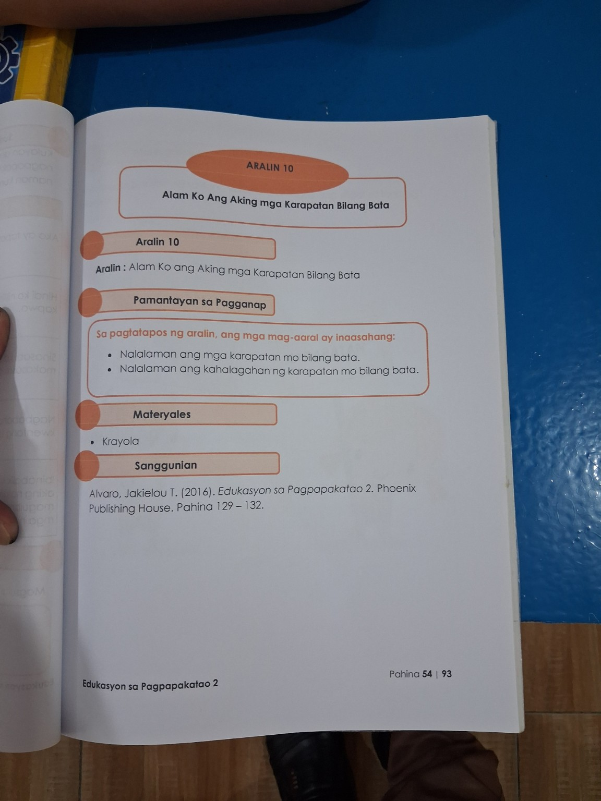
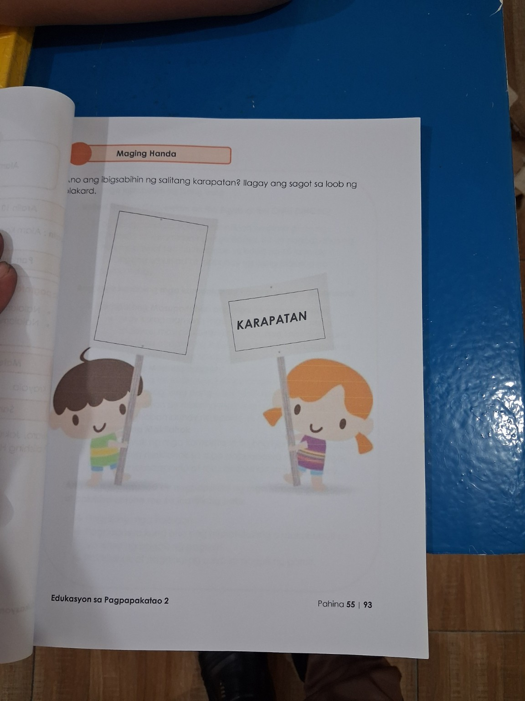
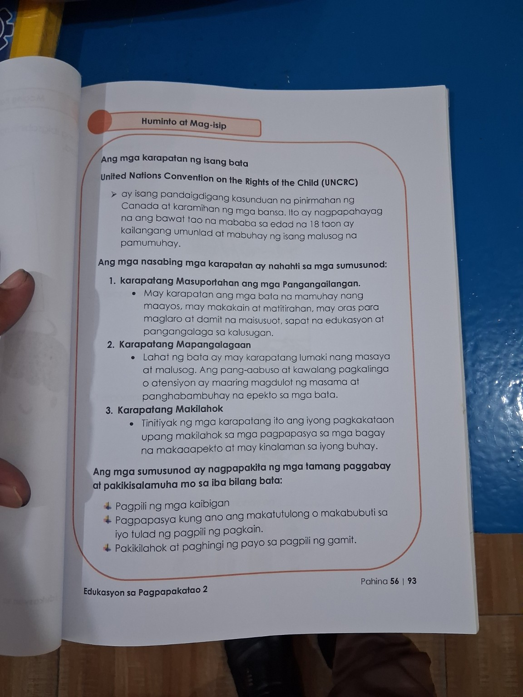

Alam Ko ang Aking mga Karapatan Bilang Bata
My Rights as a Child. Alamin ang mahahalagang karapatan ng isang bata at kung paano makikilahok nang tama sa mga bagay na nakaaapekto sa iyong buhay.
🎯 Mga Layunin
🗺️ Daloy ng Pagkatuto
Connect
Teach & Model
Guided Practice
Game Practice
Apply
Mastery
🔗 Connect: Ano ang Karapatan?
Isipin: Ano ang isang bagay na dapat mong matanggap, magawa, o maranasan dahil ikaw ay isang bata?
💭 Think-Pair-Share
Sabihin sa katabi: “Ang isang karapatan ko bilang bata ay ______ dahil ______.”
💡 Huminto at Mag-isip: Ano ang Karapatan?
Ang karapatan ay mga bagay na dapat matanggap at mapangalagaan ng isang bata upang siya ay lumaki nang maayos, ligtas, masaya, at malusog.
🌍 United Nations Convention on the Rights of the Child (UNCRC)
Ayon sa sanggunian, ang UNCRC ay isang pandaigdigang kasunduan na nagsasaad ng mga karapatan ng mga batang wala pang 18 taong gulang upang sila ay umunlad at mabuhay nang malusog.
1. Karapatang Masuportahan ang mga Pangangailangan
May karapatan ang bata sa maayos na pagkain, pahinga, oras para maglaro, damit, edukasyon, at pangangalaga sa kalusugan.
2. Karapatang Mapangalagaan
May karapatan ang bata na lumaki nang masaya at malusog. Hindi dapat abusuhin o pabayaan ang bata.
3. Karapatang Makilahok
May pagkakataon ang bata na makilahok sa mga pagpapasya tungkol sa mga bagay na maaaring makaapekto sa kaniyang buhay.
📌 Tandaan
- Ang karapatan ay hindi “gantimpala”; ito ay dapat igalang at pangalagaan.
- May karapatan ang bata, at may pananagutan din siyang igalang ang karapatan ng iba.
- Ang pakikilahok ay dapat may wastong paggabay at pakikinig sa payo ng nakatatanda.
🤝 Guided Practice: Anong Karapatan?
Piliin ang karapatang ipinapakita sa bawat sitwasyon. Pagkatapos, basahin ang paliwanag.
✏️ Your Turn: Tama o Hindi?
Piliin kung ang kilos ay nagpapakita ng paggalang sa karapatan ng bata.
🧠 Quick Recall
Karapatang Masuportahan ang mga Pangangailangan
🎮 Game Zone: Rights Rescue!
Tulungan ang batang tauhan na piliin ang tamang karapatan. May 8 rounds.
🃏 Memory Match: Right + Example
I-click ang dalawang card na magkapares.
🌱 Application: Karapatan at Pananagutan
Ang pagkilala sa karapatan ay may kasamang paggalang sa karapatan ng iba. Piliin ang pinakamainam na kilos.
📝 Aking Pangako
Tapusin: “Iginagalang ko ang aking mga karapatan at karapatan ng iba sa pamamagitan ng…”
🏆 Mastery Check
25 items. Piliin ang pinakamahusay na sagot. Tip: Basahin muna nang mabuti ang sitwasyon.
🔁 Practice My Mistakes
Kung may maling sagot sa mastery check, dito mo maaaring balikan ang mahahalagang ideya.
🌟 Enrichment
Gumawa ng simpleng “My Rights” mini-poster sa papel. Isulat ang tatlong karapatan mula sa aralin at isang halimbawa para sa bawat isa.
📚 Batayan ng Aralin
Ang interactive lesson na ito ay binuo mula sa tatlong pahinang larawan na ibinigay para sa Aralin 10: Alam Ko ang Aking mga Karapatan Bilang Bata.
The source pages are preserved below for teacher reference.
Pahina 54

Pahina 55

Pahina 56
